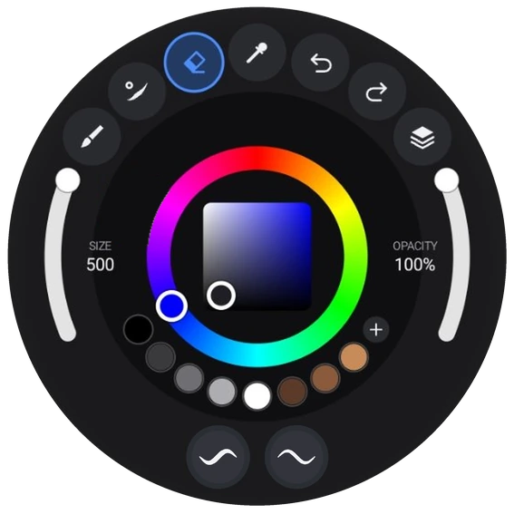
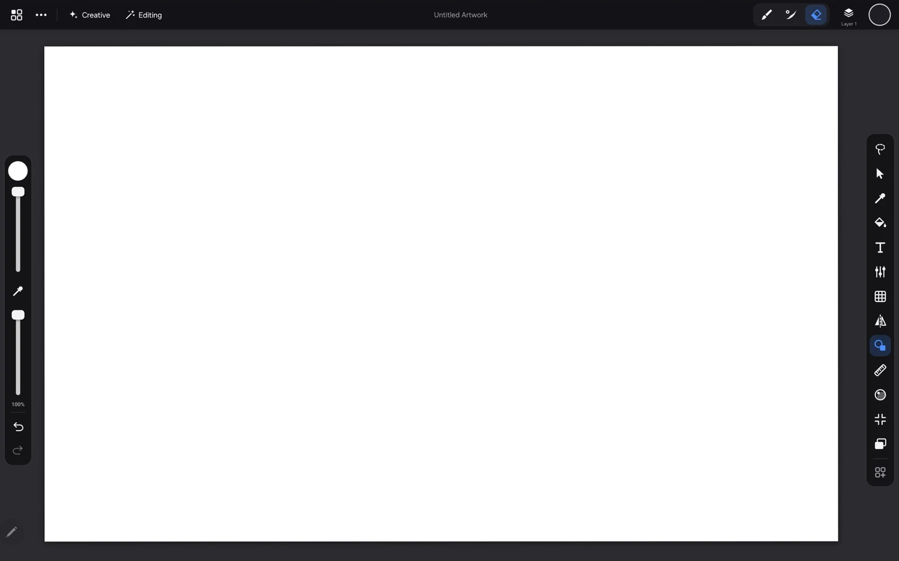

استوديو رسم كامل، في قلمك.A whole painting studio, in your pen.ستۆدیۆیەکی تەواوی وێنەکێشان، لە قەڵەمەکەتدا.
تطبيق رسم مجاني لأجهزة أندرويد اللوحية وقلم S Pen. فُرَش تحسّ بالضغط، طبقات، شبكات منظور، فيكتور، ودولاب ألوان يفتح تحت قلمك مباشرة.A free drawing app for Android tablets and the S Pen. Pressure brushes, layers, perspective grids, vector shapes, and a color wheel that opens right under your pen.ئەپێکی بێبەرامبەری وێنەکێشان بۆ تابلێتەکانی ئەندرۆید و قەڵەمی S Pen. فڵچەی هەستیار بە پەستان، چینەکان، تۆڕی پێرسپێکتیڤ، ڤێکتەر، و چەرخی ڕەنگ کە لە ژێر قەڵەمەکەتدا دەکرێتەوە.
من فنان، للفنانينMade by an artist, for artistsلە هونەرمەندێکەوە، بۆ هونەرمەندان
أنا مصمم وفنان. بحثت طويلاً عن تطبيق رسم على أندرويد يشبه Procreate، ولم أجد واحداً جيداً. فصنعت Inkora.I'm a designer and artist. I looked for a long time for a drawing app on Android that feels like Procreate, and never found a good one. So I made Inkora.من دیزاینەر و هونەرمەندم. ماوەیەکی زۆر بەدوای ئەپێکی وێنەکێشاندا گەڕام لەسەر ئەندرۆید کە وەک Procreate بێت، بەڵام هیچ یەکێکی باشم نەدۆزییەوە. بۆیە Inkoraم دروست کرد.
قبل أن أضع أي زر، جرّبت تطبيقات الرسم الموجودة وأخذت أفضل ما في كل واحد منها. كل شيء في Inkora في مكانه لسبب: قائمة القلم تفتح تحت قلمك، والمنزلقات بجانب يدك الأخرى، وكل ما عدا ذلك يبقى بعيداً عن الرسمة.Before placing a single button, I went through the art apps out there and took the best of each one. Everything in Inkora is where it is for a reason: the pen menu opens under your pen, the sliders sit by your other hand, and everything else stays out of the way of your drawing.پێش ئەوەی یەک دوگمەش دابنێم، ئەپەکانی وێنەکێشانم تاقی کردەوە و باشترین شتی هەر یەکێکیانم وەرگرت. هەموو شتێک لە Inkora بە هۆیەکەوە لە شوێنی خۆیدایە: مێنیوی قەڵەم لە ژێر قەڵەمەکەتدا دەکرێتەوە، خلیسکێنەکان لە تەنیشت دەستەکەی ترتن، و هەموو شتێکی تر لە وێنەکەت دوور دەمێنێتەوە.
Inkora يجلب طريقة العمل في Procreate إلى أندرويد: الفُرَش والطبقات والإيماءات وQuickShape واستيراد فُرَش Procreate، ويضيف أشياء خاصة به، مثل دولاب الألوان تحت قلم S Pen وشريط أدوات تبنيه بنفسك.Inkora brings the Procreate way of working to Android: the brushes, layers, gestures, QuickShape and Procreate brush import. And it adds things of its own, like the color wheel under the S Pen and a toolbar you build yourself.Inkora شێوازی کارکردنی Procreate دەهێنێتە سەر ئەندرۆید: فڵچە، چین، جووڵەکان، QuickShape و هاوردەکردنی فڵچەی Procreate. و شتی تایبەت بە خۆی زیاد دەکات، وەک چەرخی ڕەنگ لە ژێر S Pen و شریتی ئامرازێک کە خۆت دروستی دەکەیت.
التحميلDownloadداگرتن
ملف واحد صغير، بلا حساب وبلا إعلانات. معمول للأجهزة اللوحية الكبيرة، ويعمل على الهواتف أيضاً.One small file, no account, no ads. Made for big tablets, and it works on phones too.یەک فایلی بچووک، بێ هەژمار و بێ ڕیکلام. بۆ تابلێتی گەورە دروستکراوە، لەسەر مۆبایلیش کار دەکات.
Android
الإصدار الأحدثLatestنوێترین
أندرويد 10 أو أحدث، أفضل تجربة على Galaxy Tab مع قلم S PenAndroid 10 or newer, best on a Galaxy Tab with the S Penئەندرۆید 10 یان نوێتر، باشترین ئەزموون لەسەر Galaxy Tab لەگەڵ قەڵەمی S Pen
جرّب Inkora على Google PlayTest Inkora on Google PlayInkora لەسەر Google Play تاقی بکەرەوەBeta
قبل أن ينزل Inkora على Google Play للجميع، أحتاج فنانين يجرّبونه. يكفي أن يكون عندك جهاز أندرويد وحساب Google. مجاني، وملاحظاتك تشكّل التطبيق.Before Inkora comes to Google Play for everyone, I need artists to try it. All you need is an Android device and a Google account. It's free, and your feedback shapes the app.پێش ئەوەی Inkora بۆ هەمووان بێتە سەر Google Play، پێویستم بە هونەرمەندانە تاقی بکەنەوە. تەنها ئامێرێکی ئەندرۆید و هەژمارێکی Google پێویستە. بێبەرامبەرە، و تێبینییەکانت ئەپەکە دادەڕێژن.
من فضلك ابقَ في التجربة 14 يوماً على الأقل: هكذا يسمح Google بنشر التطبيق.Please stay in the test for at least 14 days: that's what lets Google publish the app.تکایە لانیکەم 14 ڕۆژ لە تاقیکردنەوەکەدا بمێنەوە: ئەمە ڕێگە دەدات Google ئەپەکە بڵاو بکاتەوە.
كل ما تحتاجه اللوحةEverything a painting needsهەموو ئەوەی تابلۆیەک پێویستیەتی
أدوات رسم احترافية، مرتّبة ببساطة حتى تبقى عينك على الرسمة.Pro painting tools, arranged simply so your eyes stay on the drawing.ئامرازی پڕۆفیشناڵ، بە سادەیی ڕێکخراون بۆ ئەوەی چاوت لەسەر وێنەکە بمێنێت.
120 فرشاة120 brushes١٢٠ فڵچە
تحبير، رصاص، ألوان مائية، زيت، بخاخ، بكسل آرت، وقلم قصب للخط العربي. ضغط وميلان وملمس ورق، واستيراد فُرَش Procreate.Ink, pencil, watercolor, oil, airbrush, pixel art and a Qalam nib for Arabic script. Pressure, tilt and paper grain, plus Procreate brush import.مەرەکەب، قەڵەمڕەساس، ئاوڕەنگ، زەیت، پرژێنەر، پیکسڵ ئارت و قەڵەمی قامیش بۆ خۆشنووسی. پەستان، لاربوونەوە و ڕووی کاغەز، و هاوردەکردنی فڵچەی Procreate.
دولاب ألوان تحت القلمA color wheel under your penچەرخی ڕەنگ لە ژێر قەڵەم
اضغط زر القلم مطوّلاً: دولاب ألوان عادي في الوسط، وحوله الأدوات وآخر الفُرَش وألوانك، والحجم والشفافية.Hold the pen button: a standard color wheel in the middle, with tools, recent brushes, your colors, size and opacity around it.دوگمەی قەڵەم ڕابگرە: چەرخی ڕەنگی ئاسایی لە ناوەڕاست، و ئامرازەکان، فڵچەکان، ڕەنگەکانت، قەبارە و ناڕوونی بە دەوریدا.
شريط أدواتك الخاصYour own toolbarشریتی ئامرازی خۆت
اختر حتى 14 أداة من 30 وضعها بجانب يدك. أضف واحذف ورتّب، ووضع خاص لليد اليسرى.Pick up to 14 of 30 tools and keep them next to your hand. Add, remove, reorder, and a left-handed layout.تا ١٤ ئامراز لە ٣٠ هەڵبژێرە و لە تەنیشت دەستت دایانبنێ. زیاد بکە، لابەرە، ڕیزی بکە، و دۆخی دەستەچەپ.
طبقات وتحديدLayers and selectionچین و هەڵبژاردن
حتى 180 طبقة حسب ذاكرة جهازك، مع مجموعات و17 نمط دمج وقفل الشفافية. تحديد حر ومستطيل وبيضاوي، وقص ونسخ ولصق، وتحريك وتكبير وتدوير وقلب.Up to 180 layers, depending on your tablet’s memory, with groups, 17 blend modes and alpha lock. Freehand, rectangle and ellipse selection, cut, copy and paste, move, scale, rotate and flip.تا ١٨٠ چین بەپێی بیرگەی ئامێرەکەت، لەگەڵ گرووپ، ١٧ شێوازی تێکەڵکردن و قوفڵی ڕوونی. هەڵبژاردنی ئازاد، چوارگۆشە و هێلکەیی، بڕین، کۆپی و لکاندن، جووڵاندن، گەورەکردن، سووڕاندن و هەڵگەڕاندنەوە.
قلم Bézier وأشكال وتصدير SVG، ونص بأي لغة، وفلاتر بمعاينة مباشرة، وفيديو تايم لابس تلقائي.Bézier pen, shapes and SVG export, text in any language, filters with live preview, and an automatic time-lapse video.قەڵەمی Bézier، شێوەکان و هەناردەکردنی SVG، دەق بە هەر زمانێک، فلتەر بە پێشبینینی ڕاستەوخۆ، و ڤیدیۆی تایم-لاپسی خۆکار.
نظام قوائم جديدA new way around the appڕێگەیەکی نوێ لە ئەپەکەدا
كل الأدوات بشريط واحد عالجنب متل برامج الرسم على الكمبيوتر، والأدوات الأخوات تحت مسكة. شريط واحد لإعدادات الأداة فوق. وكل لوحة بتفتح تحت زرها بنفس الطريقة: Actions و Add و Adjust و Canvas و Brushes و Layers و Color. الشريط عريض أو عائم أو مثبّت، يمين أو يسار، وفيك تضيف وتشيل منه.Every tool in one bar on the side, like desktop painting programs, with sister tools under a hold. One bar for the current tool's settings at the top. Every panel opens under its button, the same way: Actions, Add, Adjust, Canvas, Brushes, Layers, Color. The tool bar can be docked, wide or floating, left or right, and you choose what is on it.هەموو ئامرازەکان لە یەک شریتی لاتەنیشت، وەک بەرنامەکانی کۆمپیوتەر. یەک شریت بۆ ڕێکخستنەکانی ئامراز لە سەرەوە. هەر پانێڵێک لە ژێر دوگمەکەی دەکرێتەوە بە هەمان شێوە. شریتەکە لکاو، پان یان سەربەست، چەپ یان ڕاست.
قوائم أرتب وأيقونات جديدةTidier menus, new iconsلیستی ڕێکتر، ئایکۆنی نوێ
شريط الأدوات يمين أو يسار، يفتح عريض بكل الأدوات أو يتخبّى بلسان صغير. Creative و Editing بشكل أوضح، القوائم المنبثقة بنفس ستايل البرنامج، وأيقونة خاصة لكل أداة.The toolbar sits left or right, opens wide with every tool or tucks into a small tab. Clearer Creative and Editing panels, pop-up menus in Inkora's own style, and an icon of its own for every tool.شریتی ئامراز لە چەپ یان ڕاست، پان دەکرێتەوە بە هەموو ئامرازەکان یان دەشاردرێتەوە. Creative و Editing ڕوونتر، لیستە بچووکەکان بە ستایلی Inkora، و ئایکۆنێکی تایبەت بۆ هەر ئامرازێک.
قرص الطبقات لدمجها، إصبعين للشفافية، طبقة لحالها بمسكة، زاوية وحجم دقيق بالتحويل مع محاذاة، دائرة ومربع كاملين بـQuickShape، إعادة تلوين، اللون السابق بمسكة، وواجهة فاتحة.Pinch layers to merge, two fingers for opacity, hold for a layer alone, exact angle and size with snapping in Transform, perfect circles and squares in QuickShape, Recolor, the previous color with a hold, and a light interface.گوشینی چین بۆ تێکەڵکردن، دوو پەنجە بۆ ڕوونی، چین بە تەنها، گۆشە و قەبارەی ورد لەگەڵ لکاندن، بازنە و چوارگۆشەی تەواو، ڕەنگکردنەوە، ڕەنگی پێشوو، و ڕووکاری ڕووناک.
قياس، ألوان من صورة، ونسخ احتياطيةMeasure, palettes from photos, backupsپێوان، پالێت لە وێنە، و یەدەگ
قِس الأطوال والزوايا وحوّل أي خط إلى مسطرة. خذ ألوان صورة كلوحة جاهزة. واحفظ كل رسوماتك في ملف واحد على Google Drive.Measure lengths and angles and turn any line into a ruler. Take the colors of a photo as a ready palette. Keep every artwork in one backup file on Google Drive.درێژی و گۆشە بپێوە و هەر هێڵێک بکە بە ڕاستەڕێ. ڕەنگەکانی وێنەیەک وەک پالێت وەربگرە. هەموو کارەکانت لە یەک فایلی یەدەگدا لە Google Drive هەڵبگرە.
ألوان مائية بروح المائيWatercolor with the spirit of watercolorئاوڕەنگ بە گیانی ئاوڕەنگ
مجموعة Aquarelle: الصبغة تعلق بحبيبات الورق وتتجمع على طرف الضربة وأنت ترسم، والضربة فوق لون ما زال مبلولاً تسيح فيه بنعومة. ومجموعات جديدة: Tempera و Markers و Light & Shade.The Aquarelle set: pigment catches in the paper and pools at the rim of the stroke while you draw, and a stroke over paint that is still wet runs softly into it. New sets too: Tempera, Markers, Light & Shade.کۆمەڵەی Aquarelle: بۆیەکە لە دەنکی کاغەزەکەدا دەگیرێت و لە لێواری هێڵەکەدا کۆدەبێتەوە، و هێڵێک لەسەر بۆیەی هێشتا تەڕ بە نەرمی تێیدا بڵاودەبێتەوە. کۆمەڵەی نوێ: Tempera، Markers، Light & Shade.
كوميكس وتدرّج لونيComics and gradientsکۆمیک و لێژی ڕەنگ
تقسيمات جاهزة لصفحة الكوميكس، وفقاعات كلام وتفكير وصراخ ومربعات نص تضعها مثل أي طبقة. وأداة تدرّج لوني خطّي أو دائري، إلى لون آخر أو إلى شفاف.Panel layouts for a comic page, and speech, thought, shout and caption bubbles you place like any layer. A gradient tool, linear or radial, into another color or fading out.دابەشکردنی ئامادە بۆ لاپەڕەی کۆمیک، و بڵقی قسە و بیرکردنەوە و هاوار و سندوقی دەق کە وەک هەر چینێک دایاندەنێیت. ئامرازی لێژی ڕەنگ، هێڵی یان بازنەیی.
لقطات محفوظة ومراجعSnapshots and referencesوێنەگرتن و سەرچاوە
احفظ الرسمة كما هي الآن وارجع إلى هذه اللحظة لاحقاً. وصورة المرجع التي تستوردها تبقى مع رسمتها.Keep the artwork as it is now and come back to that moment later. The reference photo you import stays with its artwork.کارەکە وەک ئێستا بپارێزە و دواتر بگەڕێوە بۆ ئەو ساتە. وێنەی سەرچاوە کە هاوردەی دەکەیت لەگەڵ کارەکەیدا دەمێنێتەوە.
سلايدرات دقيقةSliders that know precisionهێڵی ورد
ابتعد عن الشريط فيتحرك أبطأ. انقر المقبض مرتين لتضع علامة ترجع إليها بنقرة، ولكل فرشاة علاماتها. واضغط مطوّلاً لتكتب رقماً دقيقاً.Slide away from the bar and it moves slower. Double-tap the handle to leave a mark you can tap to come back to; every brush keeps its own. Hold the handle to type an exact number.لە هێڵەکە دوور بکەوە، خاوتر دەجووڵێت. دوو جار لە دەسکەکە بدە بۆ نیشانەیەک کە بە کرتەیەک بگەڕێیتەوە بۆی؛ هەر فڵچەیەک نیشانەی خۆی هەیە. بیگرە بۆ نووسینی ژمارەی ورد.
مكتبة فُرَش تتذكّرA brush library that remembersکتێبخانەی فڵچە کە لەبیری دەمێنێت
المثبّتة والأخيرة في الأعلى. اسحب الفرشاة إلى اليسار لتثبيتها أو إيجادها أو نسخها أو إرجاعها. واضغط مطوّلاً على الممحاة أو التمويه لتأخذ فرشاتك نفسها.Pinned and Recent sit at the top. Slide a brush to the left to pin, find, duplicate or reset it. Hold Eraser or Smudge and it takes the brush you are painting with.جێگیرکراو و دواییەکان لە سەرەوەن. فڵچەکە بەرەو چەپ ڕابکێشە بۆ جێگیرکردن، دۆزینەوە، لەبەرگرتنەوە یان گەڕاندنەوە. سڕەر یان تێکەڵکەر بگرە تا هەمان فڵچەکەت وەربگرێت.
على الموبايل أيضاً، وسهل التعلّمPhones too, and easy to learnلەسەر مۆبایلیش، و فێربوونی ئاسان
الواجهة تتكيّف مع الموبايل بالطول وبالعرض. جولة تعليمية عند أول تشغيل، وكل اختصار بصورة صغيرة متحركة، وشرح يظهر عندما يقف القلم فوق أي زر.The layout slims down for a phone, upright or on its side. A tour on first start, every shortcut as a small moving picture, and a tip when the pen rests over a button.ڕووکارەکە خۆی لەگەڵ مۆبایل دەگونجێنێت. گەشتێکی فێرکاری لە یەکەم جاردا، هەر کورتەڕێگایەک بە وێنەیەکی جووڵاو، و ڕوونکردنەوە کاتێک قەڵەم لەسەر دوگمەیەک دەوەستێت.
فُرَش Procreate كما هيProcreate brushes, as they areفڵچەکانی Procreate وەک خۆیان
افتح ملف .brushset أو .brush من تطبيق الملفات بـ Inkora، فتظهر المجموعة باسمها في مكتبة الفُرَش، مع شكلها وملمسها وحجمها وضغطها.Open a .brushset or .brush file with Inkora from your Files app and the set shows up by name in the Brush Library, with its shape, grain, size and pressure.فایلێکی .brushset یان .brush لە ئەپی فایلەکانەوە بە Inkora بکەرەوە، کۆمەڵەکە بە ناوی خۆیەوە لە کتێبخانەی فڵچەکان دەردەکەوێت، لەگەڵ شێوە، ڕووکار، قەبارە و پەستانەکەی.
إيماءات على ذوقكGestures your wayجووڵەکان بە ئارەزووی خۆت
مثل Procreate: اختر ماذا يفعل اللمس، والضغط المطوّل، وسحب ثلاث أصابع، ونقرة أربع أصابع، وزر S Pen، وزر □.Like Procreate: choose what a touch, a hold, a three-finger swipe, a four-finger tap, the S Pen button and the □ button do.وەک Procreate: هەڵبژێرە دەستلێدان، ڕاگرتن، ڕاکێشانی سێ پەنجە، کرتەی چوار پەنجە، دوگمەی S Pen و دوگمەی □ چی بکەن.
اختصارات لوحة المفاتيحKeyboard shortcutsکورتبڕەکانی تەختەکلیل
مع غطاء لوحة مفاتيح: Ctrl+Z للتراجع، و[ ] لحجم الفرشاة، وB وE وN للأدوات، وCtrl+G للعرض الرمادي. اضغط Ctrl مطوّلاً لترى القائمة كلها.With a keyboard cover: Ctrl+Z to undo, [ ] for brush size, B, E and N for the tools, Ctrl+G for grey view. Hold Ctrl to see them all.لەگەڵ تەختەکلیل: Ctrl+Z بۆ گەڕانەوە، [ ] بۆ قەبارەی فڵچە، B و E و N بۆ ئامرازەکان، Ctrl+G بۆ بینینی خۆڵەمێشی. Ctrl ڕابگرە بۆ بینینی هەموویان.
مجموعات الطبقاتLayer groupsگرووپی چین
اسحب الطبقة لليمين لاختيار عدة طبقات، واجمعها في مجموعة لها شفافيتها ونمط دمجها، أو حرّكها كلها معًا بأداة التحويل. وتُحفظ المجموعات في ملفات فوتوشوب أيضًا.Swipe layers to the right to pick several, put them in a group with its own opacity and blend mode, or move them all at once with Transform. Groups are kept in Photoshop files too.چینەکان بەرەو ڕاست ڕابکێشە بۆ هەڵبژاردنی چەند دانەیەک، بیانخە ناو گرووپێک بە ڕوونی و شێوازی تێکەڵکردنی خۆی، یان بە ئامرازی گۆڕین هەموویان پێکەوە بجووڵێنە. گرووپەکان لە فایلی فۆتۆشۆپیشدا دەمێننەوە.
Brush Studio كاملA full Brush StudioBrush Studio ی تەواو
خلط مبلول، فرشاة مزدوجة، ديناميكية اللون، تثبيت، تدبيب، ملمس، ونمط دمج، مع لوحة تجربة تُعيد الرسم كلما حرّكت أي إعداد. وتصدير فُرَشك بصيغة .brush و.brushset.Wet mix, dual brush, color dynamics, stabilization, taper, grain and blend modes, with a drawing pad that redraws as you move any setting. Export your brushes as .brush and .brushset.تێکەڵکردنی تەڕ، فڵچەی دووانە، گۆڕانی ڕەنگ، جێگیرکردن، باریککردنەوە، ڕووکار و شێوازی تێکەڵکردن، لەگەڵ تەختەیەکی تاقیکردنەوە کە بە هەر گۆڕانێک دووبارە دەیکێشێتەوە. فڵچەکانت بە .brush و .brushset هەناردە بکە.
فوتوشوب وPDF وTIFFPhotoshop, PDF and TIFFفۆتۆشۆپ، PDF و TIFF
افتح ملفات .psd واحفظها مع طبقاتها وأسمائها وأنماط دمجها، وصدّر PDF للطباعة وTIFF بجودة كاملة مع الشفافية.Open and save .psd files with their layers, names and blend modes. Export PDF for printing and TIFF in full quality, with transparency.فایلی .psd بکەرەوە و پاشەکەوت بکە لەگەڵ چین، ناو و شێوازی تێکەڵکردنەکانیان. PDF بۆ چاپ و TIFF بە کوالیتی تەواو لەگەڵ ڕوونی هەناردە بکە.
مجموعات في المعرضStacks in the galleryکۆمەڵە لە گەلەری
اجمع رسوماتك في مجموعات، لكل مشروع أو عميل مجموعته، وأعد تسميتها أو فكّها متى شئت.Keep artworks together in stacks, one for each project or client, and rename or unstack them any time.وێنەکانت لە کۆمەڵەدا کۆ بکەرەوە، بۆ هەر پڕۆژە یان کڕیارێک کۆمەڵەیەک، و هەر کاتێک ناویان بگۆڕە یان هەڵیانوەشێنەوە.

زر القلم يعمل الشغل عنكYour pen button does the workدوگمەی قەڵەم کارەکە دەکات
كل ما تحتاجه كثيراً موجود على القلم نفسه، فتبقى عينك على الرسمة.Everything you reach for often lives on the pen itself, so you never look away from the drawing.هەموو ئەوەی زۆر پێویستتە لەسەر قەڵەمەکە خۆیەتی، بۆیە چاوت لە وێنەکە لا نابات.
وكل إيماءة تقدر تغيّرها من: إجراءات ← التفضيلات ← التحكم بالإيماءات.And you can change what every gesture does in Actions › Prefs › Gesture controls.و دەتوانیت ئەوەی هەر جووڵەیەک دەیکات بگۆڕیت لە: کردارەکان ‹ ڕێکخستنەکان ‹ کۆنترۆڵی جووڵەکان.
كل الاختصارات، بالصورEvery shortcut, shownهەموو کورتەڕێگاکان، بە وێنە
كل إيماءة بصورة صغيرة متحركة. نفس الصفحة موجودة جوّا التطبيق: الإجراءات › المساعدة › الاختصارات بالصور.Each gesture as a small moving picture. The same page is inside the app: Actions › Help › Shortcuts, shown.هەر جووڵەیەک بە وێنەیەکی بچووکی جووڵاو. هەمان لاپەڕە لەناو ئەپەکەدایە: کردارەکان › یارمەتی › کورتەڕێگاکان بە وێنە.
من داخل التطبيقInside the appلە ناو ئەپەکەدا
لقطات حقيقية من Galaxy Tab S11 Ultra: الرسمة في الوسط، المنزلقان على جهة، وشريط أدواتك على الجهة الثانية.Real screenshots from a Galaxy Tab S11 Ultra: the canvas in the middle, the sliders on one side and your toolbar on the other.وێنەی ڕاستەقینە لە Galaxy Tab S11 Ultra: تابلۆ لە ناوەڕاست، خلیسکێنەکان لە لایەک و شریتی ئامرازەکانت لە لایەکەی تر.

الشاشة الرئيسية، كل شيء على الأطراف حتى تبقى الرسمة كبيرة.The main screen: everything sits on the edges so the canvas stays big.شاشەی سەرەکی: هەموو شتێک لە لێوارەکانە بۆ ئەوەی تابلۆکە گەورە بمێنێت.لوحة إبداع: بطاقات كبيرة، والنجمة تضيف أي أداة إلى شريطك.The Creative panel: big cards, and the star adds any tool to your toolbar.پانێڵی داهێنان: کارتی گەورە، و ئەستێرەکە هەر ئامرازێک بۆ شریتەکەت زیاد دەکات.
التثبيتHow to installدامەزراندن
Inkora غير موجود على Google Play بعد، لذلك تثبّته من الملف مباشرة. يأخذ دقيقة.Inkora isn't on Google Play yet, so you install it from the file. It takes a minute.Inkora هێشتا لە Google Play نییە، بۆیە ڕاستەوخۆ لە فایلەکەوە دایدەمەزرێنیت. یەک خولەک دەخایەنێت.
حمّل Inkora-0.34.1.apk على جهازك.Download Inkora-0.34.1.apk on your device.Inkora-0.34.1.apk لەسەر ئامێرەکەت دابگرە.
افتح الملف، وإذا سألك أندرويد اضغط الإعدادات وفعّل السماح من هذا المصدر.Open the file. If Android asks, tap Settings and turn on Allow from this source.فایلەکە بکەرەوە. ئەگەر ئەندرۆید پرسیاری کرد، کرتە لە Settings بکە و Allow from this source چالاک بکە.
إذا ظهر تحذير Play Protect اضغط التثبيت على أي حال.If Play Protect shows a warning, tap Install anyway.ئەگەر Play Protect ئاگاداریی پیشان دا، کرتە لە Install anyway بکە.
افتح Inkora وابدأ الرسم.Open Inkora and start drawing.Inkora بکەرەوە و دەست بە وێنەکێشان بکە.
ماذا تحتاجWhat you needچیت پێویستە
أندرويد 10 أو أحدثAndroid 10 or newerئەندرۆید 10 یان نوێتر
أفضل تجربة: جهاز لوحي كبير مع قلم S PenBest with a big tablet and an S Penباشترین: تابلێتی گەورە لەگەڵ قەڵەمی S Pen
على الهاتف ترسم بإصبعك، وقائمة القلم تحتاج قلماً بزرOn phones you draw with your finger; the pen menu needs a pen with a buttonلەسەر مۆبایل بە پەنجە دەکێشیت؛ مێنیوی قەڵەم پێویستی بە قەڵەمی دوگمەدار هەیە
إذا أُغلق التطبيق فجأة، يعرض تقريراً تنسخه وترسلهIf the app ever closes, it shows a report you can copy and sendئەگەر ئەپەکە لەناکاو داخرا، ڕاپۆرتێک پیشان دەدات کە دەتوانیت کۆپی بکەیت و بینێریت